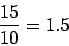
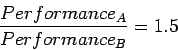

ถ้าคอมพิวเตอร์ A ใช้เวลาประมวลผลโปรแกรม 10 วินาที และคอมพิวเตอร์ B ใช้เวลาประมวลผลโปรแกรมเดียวกัน 15 วินาที คอมพิวเตอร์ A เร็วกว่าคอมพิวเตอร์ B เท่าไร
เรารู้ว่าคอมพิวเตอร์ A เร็วกว่าคอมพิวเตอร์ B  เท่า ถ้า
เท่า ถ้า
 |
(4.6) |
ดังนั้นอัตราส่วนของประสิทธิภาพจะเท่ากับ
|  | (4.7) |
คอมพิวเตอร์ A เร็วกว่าคอมพิวเตอร์ B  เท่า
เท่า
จากตัวอย่างขั้นต้นเราสามารถพูดได้ว่าคอมพิวเตอร์ B ช้ากว่าคอมพิวเตอร์ A  เท่า เนื่องจาก
เท่า เนื่องจาก
|  | (4.8) |
และหมายถึง
| (4.9) |
เมื่อเราพูดว่าปรับปรุงประสิทธิภาพนั้นหมายถึง เพิ่มประสิทธิภาพ หรือลดเวลาที่ใช้ในการประมวลผล
ในระบบคอมพิวเตอร์แบบฝังตัวการวัดประสิทธิภาพ มักวัดในลักษณะของข้อจำกัดทางเวลาจริง โดยการประมวลผล หรือการทำงานของโปรแกรมประยุกต์จะต้องเสร็จสิ้นในเวลาที่กำหนด สามารถแบ่งออกได้เป็นแบบ Hard Real Time และ Soft Real Time โดย Hard Real Time เป็นการกำหนดกรอบเวลาที่คงที่สำหรับการโปรแกรมในการประมวลผล เช่น การคำนวณในระบบเบรค ABS การคำนวณในการควบคุมเครื่องบิน ที่การทำงานมีผลต่อความปลอดภัย ชีวิตและทรัพย์สิน ในส่วนของ Soft Real Time ถ้ามีการทำงานของโปรแกรม สามารถประมวลสร้างเหตุการณ์ตามเวลาที่กำหนดได้เป็นส่วนใหญ่ ก็สามารถยอมรับได้ เช่น การแปลงข้อมูลใน DVD